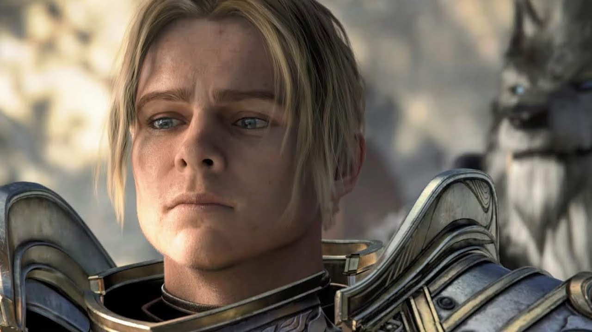

Anduin Wrynn
The son of King Varian Wrynn, ten-year-old Anduin was given the crown to maintain order when Varian disappeared en route to a diplomatic conference at Theramore Isle. However, real power resided in the hands of Highlord Bolvar Fordragon, the Regent of Stormwind, and Lady Katrana Prestor, the Royal Advisor. King Varian's disappearance was a closely-kept secret, and his sudden "return" (later proven to be an impostor) was treated with skepticism by both Anduin himself and other leaders, such as King Magni of Ironforge. He was also captured by Onyxia because he was seen as a threat to her plan to overthrow Varian. He was freed by Valeera Sanguinar and Broll Bearmantle with an army of Stormwind Knights including his father, Varian Wrynn. They slew Onyxia, and Anduin's father regained his former self. Valeera Sanguinar is also known to have taught Anduin his excellent dagger skills. She is also known as a bodyguard to him.
Heir to the throne of Stormwind, Anduin is wise beyond his years. Time and again, he has used diplomacy to end conflict, inspiring even his warrior father to lay down arms in pursuit of peace. But diplomacy has its limits, and some villains can't be reasoned with. As the Burning Legion threatens to annihilate Azeroth, Anduin will learn the true cost of peace... and whether he's willing to pay it. Upon the death of Varian upon the Broken Shore, Anduin assumes the role of King of Stormwind and leader of the Alliance.
Approached by Alonsus Faol and Calia Menethil, Anduin learns that there are a small number of Forsaken that wish to reunite with their still-living loved ones. He realizes such a meeting could improve relations between the factions if all goes well, but both Turalyon and Genn Greymane vehemently disapprove. The two eventually come around to his way of thinking, however, especially when Turalyon is forced to recognize Alonsus as something other than a shambling, mindless monstrosity. The meeting takes place in Arathi Highlands, and Anduin remains with his assembled troops and Turalyon to watch. While the bulk of the meeting goes well, Calia inadvertently reveals her identity when attempting to assist those Forsaken that wish to defect from the Horde, much to the concern of Anduin and the fury of Sylvanas Windrunner. He watches helplessly as Sylvanas orders her archers to kill her own people, entering the field himself when he notices that Calia has become a target. He attempts to get to her in time, but Sylvanas kills her with an arrow to the back. Anduin retrieves her body, risking a direct attack by Sylvanas, but she allows him to leave. He and Alonsus then take Calia back to Netherlight Temple. It is there he is asked, along with Alonsus, to use their power in conjunction with the naaru Saa'ra, to bring Calia back to "life".
Anduin now holds little hope that the Horde, under the leadership of Sylvanas, will ever desire peace, so when azerite is discovered in Silithus, he comes gravely concerned.